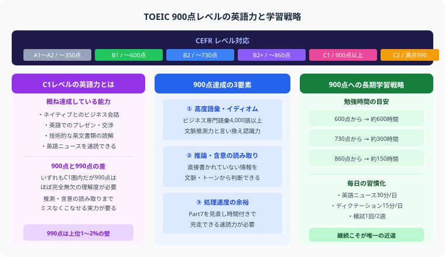

TOEICの満点は990点で、900点は全受験者の上位5〜8%に相当するスコアです。国際的な英語習熟度の指標であるCEFRではC1レベル（上級）に対応し、ネイティブとのビジネス会話や技術的な文書の読解が概ねこなせる水準です。
| スコア帯 | CEFR目安 | 位置づけ |
|---|---|---|
| 990点（満点） | C2 | 上位1〜2% |
| 900〜985点 | C1 | 上位5〜8% |
| 800〜895点 | B2 | 上位20〜25% |
| 700〜795点 | B1〜B2 | 上位35〜40% |
900点に到達するために必要な学習時間は、現在のスコアによって大きく異なります。下表はあくまで目安ですが、計画立案の参考にしてください。
| 現在のスコア | 追加必要時間の目安 | 毎日2時間の場合 |
|---|---|---|
| 730点台 | 200〜300時間 | 約3〜5ヶ月 |
| 800点台 | 100〜150時間 | 約2〜3ヶ月 |
| 860点台 | 50〜100時間 | 約1〜2ヶ月 |
730点台からの挑戦は、リスニングとリーディングの両面で大きな底上げが必要です。一方、860点台の方はケアレスミスの排除と時間管理の最適化に集中することで到達できるケースが多いです。
900点を達成するためには、リスニングセクションで450点以上が事実上の必要条件です。リスニングは練習量に比例して伸びやすく、かつスコアへの影響が大きいため、最優先で強化しましょう。毎日30〜45分の音読・シャドーイングが効果的です。
900点を逃す最大の原因のひとつが、Part 7 の時間切れです。残り5問を塗り絵（マーク放棄）すると、それだけで20〜30点失うことになります。Part 5 を15分以内に完走する処理速度が必須です。
860点台の方が900点に届かない主な原因はケアレスミスです。問題文の読み違い・選択肢の思い込み・マークミスなどを模試ごとに記録し、パターンを把握して再発防止策を打ちましょう。
| Part | 内容 | 900点達成の目標 |
|---|---|---|
| L Part 1 | 写真描写 | 全問正解 |
| L Part 2 | 応答問題 | 正答率95%以上 |
| L Part 3 | 会話問題 | 正答率90%以上 |
| L Part 4 | 説明文問題 | 正答率90%以上 |
| R Part 5 | 短文穴埋め | 正答率95%・15分以内 |
| R Part 6 | 長文穴埋め | 正答率90%・10分以内 |
| R Part 7 | 読解問題 | 全問完走・残り時間ゼロNG |
TOEIC頻出単語1000語を網羅した定番単語帳です。900点を目指す段階では「全語完璧に」仕上げることが前提。意味を見て英単語が言えるレベルまで繰り返しましょう。
ETS（テスト開発機関）が制作した公式問題集は、本番に最も近い問題形式・難易度です。Vol.1〜最新版まで可能な限り入手し、模試形式で時間を計って解くことで本番感覚を養います。
TOEIC 900点以上を目指す上級者向けの語彙集です。金フレだけでは足りない上位語彙・コロケーションを補強できます。860点台以上の方は特に取り入れる価値があります。
TOEICのスコアは、正しい戦略を積み重ねれば確実に伸びていきます。
この記事が少しでも参考になったら、この下にある【いいねボタン】をポチッと押してもらえると、めちゃくちゃ嬉しいです！ そして、Study Questで今日の学習時間を記録して、合格までの成長を「見える化」していきましょう。
まず公式問題集で模試を1回解き、Part別スコアと間違いのパターンを分析します。自分の弱点を正確に把握することが900点突破への最短ルートです。この時点では「どこが弱いか」を見極めることに集中してください。
1ヶ月目に発見した弱点Partを集中的に強化します。リスニングが弱ければシャドーイングを毎日実施、Part 5 の精度が低ければ文法参考書で基礎を固めます。週1回は模試を解いて進捗を確認しましょう。
最終月は本番を想定した模試を週1回（計4回）実施します。模試後の復習に重点を置き、ケアレスミスのパターンを徹底記録。時間管理の感覚を体に染み込ませることで、本番でのパフォーマンスを最大化します。
TOEIC 900点を取得した後は、英語力をさらに拡張・活用するステージへ進むことができます。